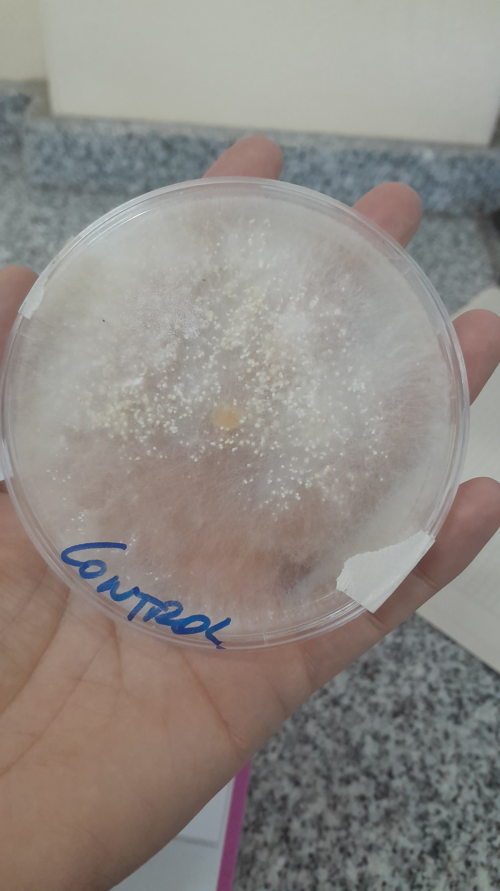

Este tipo de ensayos se realizan para evaluar el efecto antagónico de los aislados de PGPM (microorganismos promotores de crecimiento vegetal)
sobre hongos fitopatógenos y probar los mecanismos de inhibicion relacionados a la producción de antibióticos o enzimas hicrolíticas.
El ensayo consiste en colocar un disco de Micelio(conjunto de hifas que constituyen la estructura vegetativa de los hongos)
de 5 mm de diametro (este disco proviene de una placa de petri donde el hongo ha estado creciendo al menos durante 5 días sin restricciones)
en el cetro de la placa de petri el contenido medio de cultivo estéril como agar dextrosa (PDA). Este es un medio de cultivo (general y sólido)
que presenta como fuente carbonada almidones y la dextrosa que son la base para el crecimiento de hongos y levaduras.
Debemos tener en cuenta que tanto en estas pruebas duales, como en pruebas volátiles que el micelio que debemos utilizar debe ser obtenido de
un hongo que se encuentre en activo crecimiento.
En el caso de los hongos productores de esporas, es posible la realización de ensayos
utilizando una suspensión de esporas de concentración conocida.
Para ello deben prepararse suspensiones de esporas en solución
salina estéril en combinación con surfactantes como el Tween20, para evitar que
por efecto de adsorción las esporas queden adheridas a las paredes de las
micropipetas utilizadas. Para el conteo de esporas, se utiliza la cámara de
Neubauer o hemocitómetro, es un instrumento utilizada en medicina y biología para realizar
el recuento de esporas y células en un medio liquido; similar a la Cámara de Petroff-Hausser.>
Una vez colocados los discos de micelio o sembradas las esporas
debemos sembrar por superficie los PGPM en líineas paralelas a 15 mm de
distancia del disco fúngico sin permitir el contacto inicial entre ellos.
Las placas incubadas el serán selladas a la temperatura óptima necesaria para
crecimiento de los patógenos.
La superficie de crecimiento del micelio se medirá
diariamente, determinando el diámetro de crecimiento en dos direcciones para
obtener un promedio.
En este tipo de ensayos es necesario utilizar controles, por
ello se debe sembrar el disco fúngico o las esporas y reemplazar las líneas
paralelas de PGPM con H20 estéril. Los resultados se expresarán como
porcentaje de inhibición de crecimiento del micelio (PIC) de acuerdo a la
siguiente fórmula: PIC= [(C-T)/C] x 100, donde C es la media del área del control
(mm²), y T es la media del área de cada tratamiento (mm)